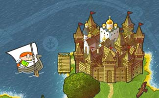

Холдинг Т1, ГК «Иннотех»,
Frontend-разработчик React
Frontend-разработчик React

20 лет
в web-разработке
5 игр
для школьников
в рамках проектов

Александр Пономаренко
20 лет
в web-разработке
5 игр
для школьников
в рамках проектов
численность сотрудников
ИТ-холдинга Т1
городов присутствия
в России и СНГ
суммарная выручка холдинга
с НДС за 2023 год
прирост численности
ИТ-холдинга T1 в 2024 г.
Центров компетенций
общий процент
вовлеченности
сотрудников
удовлетворённости
условиями труда
средний возраст
сотрудников
1. Алгоритм Дейкстры
2. Квадратная сетка и обход препятствий
3. Оптимизация. A*
4. Телепортация
5. Алгоритм Дейкстры vs A*
6. Алгоритм Дейкстры в Warlords
7. Примеры игр
Вид посуды
Муж графини
Почетный дворянский титул
Геометрическая фигура
Алгоритм Дейкстры — алгоритм на графах, изобретённый нидерландским учёным Эдсгером Дейкстрой в 1959 году.
Находит кратчайшие пути
от одной из вершин графа
до всех остальных
1. Алгоритм Дейкстры
2. Квадратная сетка и обход препятствий
3. Оптимизация. A*
4. Телепортация
5. Алгоритм Дейкстры vs A*
6. Алгоритм Дейкстры в Warlords
7. Примеры игр
Если что-нибудь может пойти не так —
оно пойдет не так
Эдвард Мерфи
1. Алгоритм Дейкстры
2. Квадратная сетка и обход препятствий
3. Оптимизация. A*
4. Телепортация
5. Алгоритм Дейкстры vs A*
6. Алгоритм Дейкстры в Warlords
7. Примеры игр
H(x0, x1, y0, y1) = |x1 — x0| + |y1 — y0|
H1(x, y, xT, yT) = |xT — x| + |yT — y|
H2(x, y, xT, yT) = 2 * H1()
H3(x, y, xT, yT, xS, yS) = 2 * H1() + D(), где
D(x, y, A, B, C) = |A * x + B * y + C| / sqrt(A * A + B * B)
A = yT — yS
B = xS — xT
C = xS * (yS — yT) + yS * (xT — xS)
(xT, yT) — целевая вершина
(xS, yS) — исходная вершина
(x, y) — вершина, для которой вычисляем значение H()
H1(x, y, xT, yT) = |xT — x| + |yT — y|
H2(x, y, xT, yT) = 2 * H1()
H3(x, y, xT, yT, xS, yS) = 2 * H1() + D()
H4(x, y, xT, yT, xS, yS) = 5 * (4 * H1() + D())
1. Алгоритм Дейкстры + ранний выход
+ эвристическая функция = A*
2. Для работы A* потребовалась настройка коэффициентов
1. Алгоритм Дейкстры
2. Квадратная сетка и обход препятствий
3. Оптимизация. A*
4. Телепортация
5. Алгоритм Дейкстры vs A*
6. Алгоритм Дейкстры в Warlords
7. Примеры игр
Что будет, если свернуть плоскость в трубочку или воронку?
И переход между ними соответствует...
Что будет, если свернуть плоскость в трубочку или воронку?
И переход между ними соответствует Телепортации
в привычном для нас пространстве
1. A* подходит не для всех случаев жизни
2. Алгоритм Дейкстры позволяет смоделировать телепортацию в игре
1. Алгоритм Дейкстры
2. Квадратная сетка и обход препятствий
3. Оптимизация. A*
4. Телепортация
5. Алгоритм Дейкстры vs A*
6. Алгоритм Дейкстры в Warlords
7. Примеры игр
| N, сторона квадрата | N2, узлов в графе | T, миллисекунд |
|---|---|---|
| 10 | 100 | 3 |
| 100 | 10 000 | 557 |
| 1 000 | 1 000 000 | 51 555 |
| N, сторона квадрата | N2, узлов в графе | T, миллисекунд |
|---|---|---|
| 10 | 100 | 2 |
| 100 | 10 000 | 14 |
| 1 000 | 1 000 000 | 835 |
| 10 000 | 100 000 000 | *out of memory |
A* эффективнее, чем алгоритм Дейкстры
Также очень хорош BFS (Breadth-First Search) с эвристикой, но нужен невзвешенный граф
1. Алгоритм Дейкстры
2. Квадратная сетка и обход препятствий
3. Оптимизация. A*
4. Телепортация
5. Алгоритм Дейкстры vs A*
6. Алгоритм Дейкстры в Warlords
7. Примеры игр
1. Алгоритм Дейкстры (A*) хорошо работает не только
для игр «вид сбоку», но и для игр «вид сверху»
2. Потребовалось настраивать коэффициенты
в эвристической функции под особенности задачи
3. Алгоритм Дейкстры хорошо работает с графами разной конфигурации ребер
1. Алгоритм Дейкстры
2. Квадратная сетка и обход препятствий
3. Оптимизация. A*
4. Телепортация
5. Алгоритм Дейкстры vs A*
6. Алгоритм Дейкстры в Warlords
7. Примеры игр
Режим обучения (Chrome) — https://alexanderpono.github.io/bricks-runner/impulse/tutorial/
Режим игры (Chrome) — https://alexanderpono.github.io/bricks-runner/impulse/game/
Режим редактора уровня (Chrome) — https://alexanderpono.github.io/bricks-runner/impulse/game/#dev
1. Алгоритм Дейкстры позволяет реализовать разные игры, в т.ч. с телепортацией
2. Для работы A* необходимо настроить коэффициенты в эвристической функции
3. A* работает быстрее, чем классический алгоритм Дейкстры, но менее универсальный
** Можно создавать свои игры на основе примера:
https://github.com/alexanderpono/bricks-runner